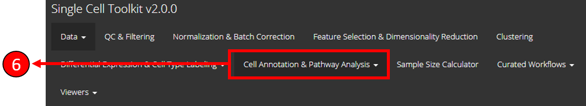
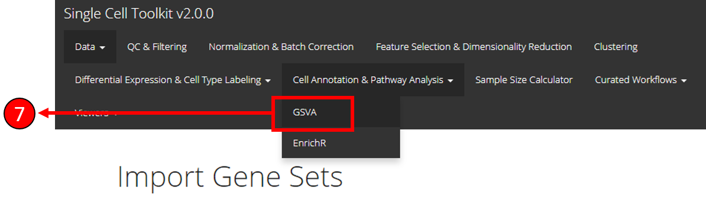

Introduction
The GSVA (Gene Set Variation Analysis) (Hänzelmann, S., Castelo, R. & Guinney, J. GSVA: gene set variation analysis for microarray and RNA-Seq data. BMC Bioinformatics 14, 7 (2013).) is a popular method for GSE (Gene Set Enrichment) and allows the identification of changes in pathway activity in RNA-Seq data. The Cell Annotation & Pathway Analysis tab in the singleCellTK offers the computation and visualization of pre-selected gene sets through GSVA sub-tab. The gene sets can be selected from several databases integrated within the toolkit or can be uploaded/created by the users.
General Worflow
The figure below describes the workflow of using GSVA through singleCellTK user interface: 
Workflow Guide
Before running the GSVA algorithm, the gene sets must be selected or uploaded through the Import Gene Sets sub-tab from the Data tab in the toolkit menu. An overall workflow guide on how to import/upload gene sets and consequently using them with GSVA sub-tab is described below. This workflow guide assumes that the SingleCell Data* has already been uploaded through the Import Single Cell Data sub-tab.**

Select the Data tab from the singleCellTK top menu.
Select the Import Gene Sets from the drop-down menu.

Users can choose the Upload a GMT file option to upload gene sets directly stored in a GMT file or choose Select from a database option to select gene sets from multiple databases integrated within the toolkit or lastly choose the Paste in your gene set option to paste gene identifiers directly into the user-interface to create a gene set.
- If Upload a GMT file option is selected, users can upload a .GMT file containing the gene sets.
- If Upload a GMT file option is selected, users can upload a .GMT file containing the gene sets.

- If Select from a database option is selected, the available gene sets are populated. Users can select the gene sets and click on the Upload button to get them to use in the downstream analysis.
- If Select from a database option is selected, the available gene sets are populated. Users can select the gene sets and click on the Upload button to get them to use in the downstream analysis.

- Once gene sets are uploaded, the selected gene sets are listed in this table.

- To run the GSVA algorithm, go to Cell Annotation & Pathway Analysis tab.

- Select GSVA option from the drop-down menu.

- Select assay to use with GSVA.
- Select GSVA as the method.
- Select gene sets to use with GSVA. Only uploaded gene sets from the Import Gene Sets page are available here.
- Select a phenotype variable to use with the plots.
- Select if a Heatmap should be plotted or a *Violin plot.
- Press Run to start computation.
- Once computation is complete, users use the Save Pathways button to store the pathways in the internal object for use in downstream analysis or use the Download Pathway Results option to download the results to the local drive.

- Results can be visualized by selecting the Plot tab (16) or the Results Table tab (17).